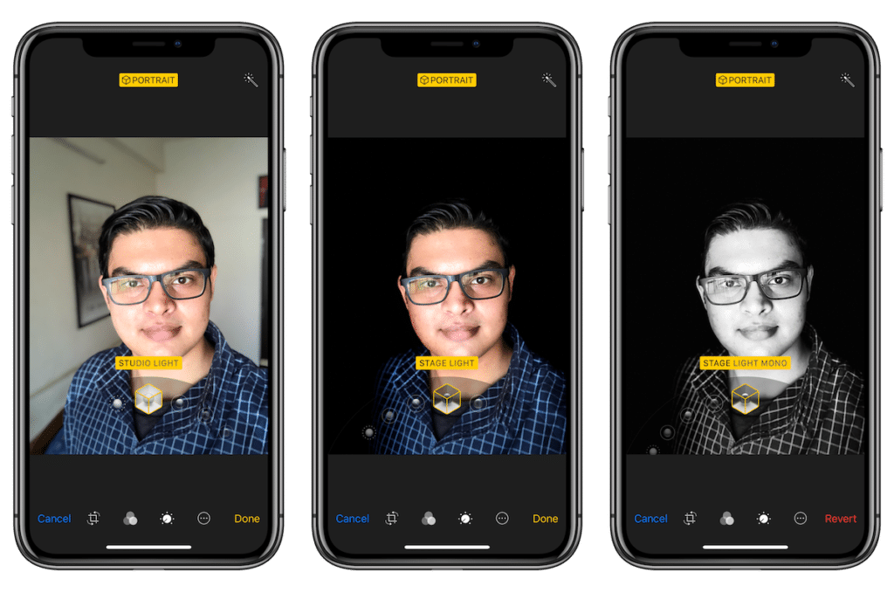

새로운 듀얼 카메라 시스템은 소중한 순간들을 더욱 넓은 장면으로 포착할 수 있게 해줍니다. 스마트폰 사상 가장 빠른 칩과 온종일 가는 배터리 덕분에 충전을 자주 안 해도 더욱 많은 일들을 해낼 수 있죠. 여기에 스마트폰 사상 최고 퀄리티의 동영상을 찍을 수 있기 때문에, 당신의 추억들을 그 어느 때보다 선명하고 아름답게 기록할 수 있습니다.
완전히 새로운 듀얼 카메라 시스템. 와이드 카메라에서 울트라 와이드 카메라까지, 사진 촬영에 있어 당신의 지평이 더욱 넓어집니다. 새롭게 설계된 인터페이스는 새로운 울트라 와이드 카메라를 활용하여 프레임 밖의 장면까지도 보여주고, 필요하면 그 조차도 카메라에 담을 수 있게 해줍니다. 게다가 동영상은 촬영도, 편집도 사진 다루듯 손쉽게 할 수 있죠. 세상에서 가장 사랑받는 카메라에 이제 새로운 시각이 더해졌습니다.
스마트폰 사상 가장 빼어난 퀄리티의 동영상 촬영 및 편집. iPhone 11에 탑재된 모든 카메라는 아름답고 선명한 초당 60 프레임의 4K 동영상을 촬영합니다. 4배나 더 넓은 장면을 포착하는 울트라 와이드 카메라는 원반을 잡으러 쏜살같이 달리는 강아지의 모습과 같은 역동적인 움직임을 촬영하기에 제격이죠. 피아노 연주회 무대에 오른 아이를 촬영 중인데 주변이 소란스러운가요? 걱정 마세요. 카메라를 줌인해서 아이를 가까이 찍으면 오디오도 같이 줌인되니까요. 게다가 이제는 동영상도 사진 다루듯 간편하게 편집할 수 있답니다.
새로운 울트라 와이드 카메라. 생각의 폭을 넓혀볼까요? 새로운 울트라 와이드 카메라는 한 프레임 안에 4배나 더 넓은 장면을 포착할 수 있게 해줍니다. 끝도 없이 펼쳐진 숨 막히게 아름다운 풍경도, 뮤직 페스티벌의 거대한 무대와 수많은 관중도, 만 킬로미터가 넘는 여정 끝에 마침내 마주한 장관과, 그 앞에 선 온 가족의 모습도 고스란히 담아낼 수 있죠.
새롭게 선보이는 ‘야간 모드’. 저조도에서 찍은 사진이라고 꼭 어둡게 나오란 법 있나요? 야간 모드는 어두울 때 자동으로 활성화되어 지금껏 본 적 없는 멋진 저조도 사진을 촬영하게 해주는 새로운 기능입니다. 플래시를 쓰지 않고도 색감은 훨씬 자연스럽고, 사진은 더욱 밝죠.
전혀 새로운 차원의 인물 사진. 새롭게 추가된 인물 사진 효과와 더 다양해진 조명 제어 기능을 활용해 iPhone 11의 듀얼 카메라는 마치 하나의 카메라처럼 모두의 시선을 사로잡는 이미지를 완성합니다. 게다가 이제 인물 사진 모드는 당신이 사랑하는 모든 피사체를 인지합니다. 인생의 반려자도 반려 동물도 모두 대상으로 인식하죠.